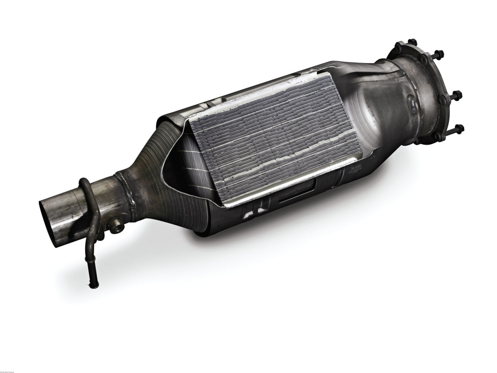

Filtrul de particule este o componentă auto proiectată să oprească particulele emise de motorul mașinii, după arderea combustibilului. În funcție de modelul fiecărui autoturism în parte, filtrul de particule poate fi situat înainte, după catalizator sau între două catalizatoare, iar prezența sa în partea de evacuare a mașinii este esențială pentru reducerea emisiilor extrem de toxice pentru mediul înconjurător.
Dacă vrei să afli mai multe despre filtrul de particule, ți-am pregătit toate informațiile de care ai putea avea nevoie pentru a întârzia cât mai mult înlocuirea sau curățarea acestuia, dar și date utile despre cum poți conduce mai eficient.
Regenerarea filtrului de particule
Poți întâlni două tipuri de filtre de particule, și anume filtre de particule uscate sau pe bază de aditiv. Ambele tipuri sunt curățate, în mod automat, prin creșterea temperaturii din galeria de evacuare a motorului, proces care poartă numele de regenerare. Când filtrul de particule este foarte încărcat, din cauza poluării din mediul urban, motorul elimină particulele nocive, pentru ca filtrul să poată fi din nou funcțional. Există și situații în care regenerarea automată a filtrului de particule nu este posibilă, moment în care va trebui să apelezi la o procedură specifică pe fiecare model de mașină în parte.
În general, producătorii auto recomandă rularea autoturismului cu o viteză constantă, la o turație ridicată, cuprinsă între 1400 și 1600 de rotații pe minut, preț de câteva minute, undeva în afara orașului, pentru a nu întâmpina niciun obstacol.
De ce se infunda un filtru de particule
Traficul urban nu permite întotdeauna atingerea unei temperaturi optime de funcționare a motorului, mai ales dacă obișnuiești să folosești mașina doar pentru deplasările la serviciu și înapoi acasă ori invers. Turațiile scăzute la care motorul poate ajunge, din pricina șoselelor aglomerate, a semafoarelor, a trecerilor de pietoni sau a altor condiții nefavorabile de drum, nu îi permite acestuia să evacueze eficient toate emisiile rezultate în urma arderii combustibilului, care în loc să treacă prin filtrul de particule, rămân blocate pe suprafața acestuia.
Pentru a amâna cât mai mult înlocuirea unui filtru de particule cu unul nou, specialiștii auto recomandă ca cel puțin o dată pe lună să parcurgi distanțe mai lungi, de cel puțin 80 de kilometri, la o turație de 2500 de rotații pe minut și o viteză constantă de aproximativ 60 de kilometri la oră. Doar astfel poți permite regenerarea corespunzătoare a filtrului de particule.
Cand se inlocuieste un filtru de particule?
Durata de viață a unui filtru de particule poate fi cuprinsă între 100.000 și 250.000 de kilometri, în funcție de felul în care îți conduci mașina, de condițiile exterioare și de calitatea combustibilului folosit. În cazul în care martorul de bord care îți indică probleme la filtrul de particule nu se stinge nici după ce ai realizat curățarea acestuia după indicațiile oferite mai sus, cel mai probabil vei fi nevoit să comanzi un filtru de particule nou.
Chiar dacă înlocuirea filtrului de particule poate însemna o cheltuială serioasă pentru tine, prețul acestei piese ajungând chiar și la 1.000 de euro, evită să apelezi la ofertele anumitor service-uri auto care anulează din computer funcțiile filtrului, pentru că acest fapt reprezintă o infracțiune. Mai mult decât atât, mașina ta va elimina noxe deosebit de nocive pentru mediu.